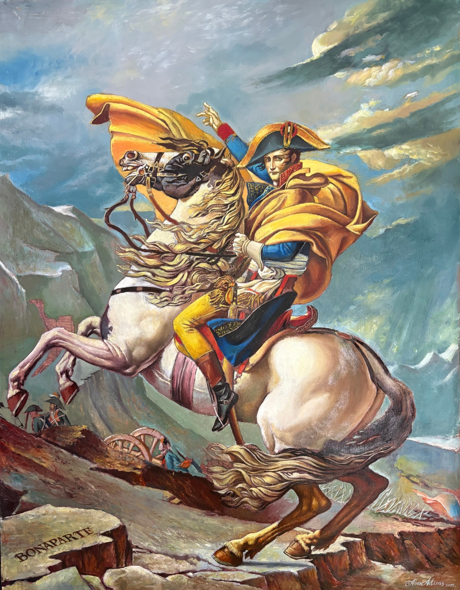

Napolean Crossing the Alps

Artist: Originally Jacque-Louis David, reproduced by Alexie Adams
Dimensions: 120 cm (H) 93 cm (W)
Category: Cultural Fine Art
Description: Great masters painting reproduction of the famous “Napoleon Crossing the Alps” by Jacques-Louis David. Napoleon Crossing the Alps (also known as Napoleon at the Saint-Bernard Pass or Bonaparte Crossing the Alps; listed as Le Premier Consul franchissant les Alpes au col du Grand Saint-Bernard) is a series of five oil on canvas equestrian portraits of Napoleon Bonaparte painted by the French artist Jacques-Louis David between 1801 and 1805. Initially commissioned by the King of Spain, the composition shows a strongly idealized view of the real crossing that Napoleon and his army made along the Alps through the Great St Bernard Pass in May 1800. It has become one of the most commonly reproduced images of Napoleon.